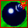
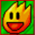
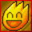
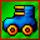

Items Extra Los items extra mejoran tus habilidades durante el juego. En cada ronda el contador de items extra se reinicia. Hay 7 items extra que pueden aparecer durante el juego: Extra Bomb Puedes plantar una bomba mas al mismo tiempo. Fuego Aumenta en 1 cuadro el rango de la explosion de tus bombas. Maximo Fuego Maximiza el alcance de la explosion de tus bombas (16 cuadros). Skate Aumenta tu velocidad en 20.0 unidades/s. Corazon Obtienes una vida adicional, asi puedes sobrevivir a una explosion.Patada Te permite patear bombas. Guante Te permite lanzar bombas.